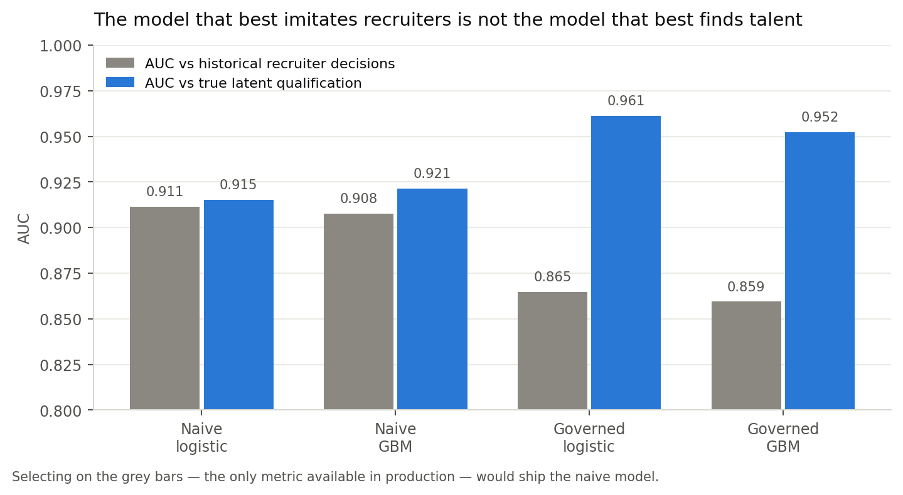
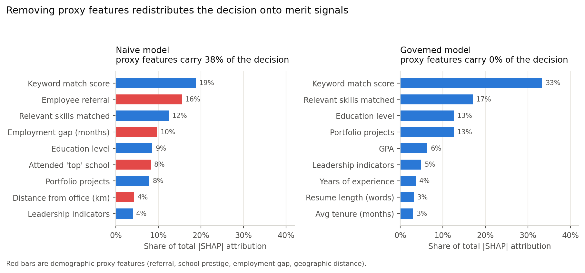

Design, evaluation, and deployment controls for a high-risk AI system in employment
A large employer receives roughly 250,000 applications a year for software engineering requisitions and can afford human review of about a quarter of them. The task is to rank applicants so that recruiter attention goes where it is most likely to be productive.
This is the domain where AI hiring has most visibly failed. Amazon abandoned an internal recruiting model in 2018 after discovering it penalized resumes containing the word women's. The instructive part is that the model was not broken. It was trained to reproduce ten years of human hiring decisions and it succeeded — the decisions were biased, so the model was biased. No amount of engineering rigor applied to the wrong objective would have caught it, because by every metric available in production the model was performing well.
This project rebuilds that failure deliberately, measures it, and then constrains it, so each governance control can be evaluated against evidence rather than asserted.
Training uses a synthetic population of 12,000 applicants rather than a real resume corpus. This is a deliberate governance choice with two justifications. Real resumes contain personal information that cannot lawfully be repurposed for model training without consent. More importantly, real data never reveals true qualification — only whether someone was hired — which makes it impossible to prove a screening model is wrong. In a constructed population, latent qualification is known, and it is generated independent of protected class. There is no real ability difference between groups in this world, so every disparity the audit finds is measurement bias by construction, with nothing to argue about.
The training label is not "was this person good at the job." It is "did a recruiter advance this person to an onsite interview." That substitution — a proxy label standing in for the construct of interest — is the central governance flaw in commercial resume screeners, and it is reproduced here through four documented mechanisms: referral homophily, in which referrals flow through networks that mirror the existing workforce; an employment-gap penalty, where gaps are unequally distributed because caregiving is; a prestige proxy, since selective-school attendance tracks parental income and US wealth is racialized; and a residual direct penalty representing the name-based callback discrimination measured by Bertrand and Mullainathan (2004), who found identical resumes with White-sounding names drew 50% more callbacks.
Two models were trained to make the governance argument empirically. The naive
model uses all sixteen available features, including four known demographic proxies
(referral, top_school, employment_gap_months,
distance_from_office_km). The governed model uses only the twelve
merit-derived features. Both were fit as logistic regression and gradient boosting, calibrated
isotonically on a held-out validation split, and evaluated on a 2,400-applicant test set.
| Model | AUC vs recruiter decisions | AUC vs true qualification | Avg. precision | Brier | Precision @25% | Recall @25% |
|---|---|---|---|---|---|---|
| Naive logistic | 0.911 | 0.915 | 0.775 | 0.098 | 0.578 | 0.879 |
| Naive GBM | 0.908 | 0.921 | 0.765 | 0.101 | 0.697 | 0.716 |
| Governed logistic | 0.865 | 0.961 | 0.680 | 0.122 | 0.556 | 0.742 |
| Governed GBM | 0.859 | 0.952 | 0.663 | 0.125 | 0.612 | 0.653 |
The naive model is better at predicting what recruiters did (AUC 0.911 vs 0.865) and worse at identifying who was actually qualified (0.915 vs 0.961). In production only the first column is observable. Standard model selection — pick the highest validation AUC — therefore selects the discriminatory model, and does so while every engineering practice is being followed correctly. Accuracy against a biased label is not a measure of quality; it is a measure of fidelity to the bias.

The production candidate is the governed logistic regression. It was not chosen for simplicity; it won on the ground-truth metric, beating gradient boosting (0.961 vs 0.952). The interpretability and 2.1 KB footprint are consequences of that choice, not compromises made for it.
Disparate impact was measured as NYC Local Law 144 requires: selection rates and impact ratios by sex, race/ethnicity, and their intersection. An impact ratio below 0.80 is prima facie evidence of adverse impact under the EEOC Uniform Guidelines (29 CFR 1607.4D).
| System | Sex | Race/ethnicity | Intersectional | Worst-affected group |
|---|---|---|---|---|
| Human recruiters (status quo) | 0.607 | 0.583 | — | — |
| Naive model | 0.612 | 0.633 | 0.488 | Female / Black |
| Governed model | 0.967 | 0.833 | 0.652 | Female / Hispanic-Latino |
The naive model does not merely inherit human bias — at the intersection it concentrates it, reaching 0.488 against a human baseline of 0.583. Automation applied a biased rule more consistently than the humans did, which is what automation is for.
The governed model passes marginal audits for sex and race while still failing intersectionally: Female/Hispanic-Latino sits at 0.652 (95% CI 0.370–0.949), with an 87% bootstrap probability of a genuine four-fifths breach. Bootstrapping also shows the reverse error is possible — Hispanic/Latino applicants overall have a passing point estimate of 0.811 but a 46% probability the true ratio breaches. Reporting point estimates without intervals would have concealed both. This system has a known, measured, unremediated disparity, and no honest governance report can present feature removal as having solved fairness.
Explainability serves two distinct jobs that are routinely conflated. Global explanation answers what the model relies on in aggregate; it is a bias-detection instrument. Local explanation answers why a specific applicant was scored as they were; it is a legal artifact, feeding the candidate-facing disclosures required under Illinois AIVIA and the EU AI Act. SHAP (Lundberg & Lee, 2017) supplies both, using Shapley values from cooperative game theory to distribute a prediction across its input features with guarantees of local accuracy and consistency.
Applied to the naive model, SHAP found that 37.7% of total attribution flowed through demographic proxies. Employee referral alone was the second most important feature in the model at 15.5% — ahead of relevant skills, education, and every measure of demonstrated work. A model whose second-strongest signal is "does this applicant know someone here" is a model that encodes network access as merit.

This is the diagnostic that a fairness metric alone would not have produced. An impact ratio tells you the outcome is skewed; SHAP tells you which feature is doing it, which is what makes remediation possible rather than merely detectable.
For each applicant the system produces a ranked attribution of the factors that most reduced their score, rendered as plain language. A representative output for a borderline applicant scoring 0.297: education level (−0.168), leadership indicators (−0.063), prior roles (−0.053), certifications (−0.014). Every factor cited is a resume attribute the applicant can see, verify, and contest.
SHAP explains the model, not the world. An attribution of
+0.30 for referral means the model raised its score because the applicant was
referred. It does not mean referrals cause job success. Treating SHAP attributions as causal
evidence is how an organization convinces itself that a biased feature is a legitimate one —
the explanation becomes a justification, and the tool built to catch the problem is used to
launder it. Attributions are therefore reported to reviewers with the causal disclaimer
attached, and feature-inclusion decisions are made on documented job-relatedness grounds, never
on SHAP importance.
The load-bearing design decision is architectural rather than statistical: the model
cannot reject anyone. It emits a ranked shortlist and a routing recommendation. There
is deliberately no code path returning REJECT. This is what keeps the tool a
ranking aid rather than an automated employment decision, and it is the control that most
directly limits worst-case harm — because the dominant risk here is not a wrong score, it is a
wrong score acted on automatically, at scale, with no human in the loop and no applicant
recourse.
| Layer | Control | Measured behavior |
|---|---|---|
| 1. Input validation | Range and null checks on all 12 features | Malformed records route to manual review; never scored |
| 2. Adversarial detection | Prompt injection, hidden text, keyword stuffing, zero-width characters | 7 of 7 red-team cases pass |
| 3. Proxy monitoring | Continuous test for features becoming demographically predictive | 11 of 48 feature-attribute pairs flagged |
| 4. Abstention band | Model declines to rank scores in 0.25–0.55 | 22.8% of applicants route to unaided human review |
| 5. Output constraints | No auto-reject; batch circuit breaker on four-fifths breach | Naive-model batches held; governed batches release |
| 6. Scope limits | Restricted to software engineering requisitions | Out-of-scope use blocked, not degraded |
Prompt injection is a live threat in this system, not a hypothetical one. Any pipeline that passes resume text to a language model for parsing or summarization is a pipeline where the applicant controls part of the prompt. The suite tests direct injection, role-reassignment injection, white-on-white hidden keyword blocks, zero-width character obfuscation, and keyword flooding, alongside benign resumes that must not trigger.
An early revision of the injection filter matched the bare phrase prompt injection.
This flagged a legitimate ML-security engineer whose resume described red-teaming language
models as their actual job. The guardrail discriminated against applicants working in AI
safety — a filter built to prevent unfairness was itself producing it. The fix keys detection
on instructional framing directed at the system rather than on subject matter, and RT-07 is
retained as a permanent regression test. This is the argument for red teaming in one case:
the failure was not in the model, and no fairness metric would ever have surfaced it.
Resume screening drifts in ways that generic ML monitoring misses. Three failure modes each require their own detector. Feature drift — the applicant pool changes — is caught by Population Stability Index and Kolmogorov-Smirnov tests. Label drift — what recruiters reward changes — silently invalidates the model with no feature moving at all. Fairness drift is the one that matters most and is monitored least.

The simulation demonstrates the decoupling in both directions. At month 2 the fairness SLO breaches — race impact ratio 0.779 — while AUC sits at a healthy 0.867 and maximum feature PSI is 0.065, below even the warning band. A conventional performance dashboard displays all-green throughout an active four-fifths breach. By month 6 the inverse holds: PSI reaches 0.683, well past the alert threshold, while AUC is unmoved at 0.868 — drift alarms firing with no performance degradation at all, and a calendar-driven retrain would have burned energy for no benefit. Neither condition is visible from the other's dashboard, which is why the impact ratio is treated here as a first-class service-level objective rather than a quarterly report.
| Trigger | Severity | Response |
|---|---|---|
| PSI ≥ 0.10 on any feature | P3 | Data science review within 5 business days |
| PSI ≥ 0.25 on any feature | P2 | Retraining assessment opened; recruiters notified |
| AUC drops > 0.05 from baseline | P2 | Model owner review; rollback considered |
| Impact ratio < 0.80, any attribute | P1 | Shortlist auto-widened; Legal and HR notified within 24 h |
| Impact ratio < 0.70, any attribute | P0 | Kill switch — model disabled, 100% human screening |
| Adversarial flag rate > 3× baseline | P2 | Security review of the intake pipeline |
The model's shortlists become the next cycle's training labels, which makes the system self-confirming unless the loop is broken deliberately: the model proposes, the recruiter ratifies, the ratification trains the successor. Three controls address this. A randomized 5% holdout is screened by humans with model output hidden, preserving an unbiased label stream — a permanent operating cost, not a pilot phase. Outcome labels replace screening labels wherever twelve-month performance and retention data exist, and any substitution is recorded in the model card. Rejected-candidate sampling interviews a stratified sample of low-scored applicants each quarter, to estimate the false-negative rate the system otherwise never observes — because a screening model receives no natural feedback about the people it screened out, and that is precisely the population where its errors matter most.
Automated employment decision tools sit in one of the most densely regulated corners of applied AI, and the obligations are concrete rather than aspirational.
| Regime | Obligation | How this system responds |
|---|---|---|
| NYC Local Law 144 | Annual independent bias audit, publicly posted; 10-business-day candidate notice | Audit pipeline is executable and versioned; impact ratios computed by sex, race, and intersection |
| EEOC Uniform Guidelines (29 CFR 1607) | Four-fifths rule; validation evidence for any selection procedure with adverse impact | Impact ratios tracked continuously as an SLO; job-relatedness documented per feature |
| Title VII / ADEA / ADA | No disparate treatment or unjustified disparate impact | Protected attributes excluded from features; retained solely in a segregated audit store |
| Illinois AIVIA (820 ILCS 42) | Notice, explanation, and consent for AI analysis | SHAP-derived candidate-facing explanations generated per applicant |
| Colorado SB 24-205 | Duty of reasonable care against algorithmic discrimination; impact assessments | Impact assessment is this document; residual disparity disclosed rather than omitted |
| EU AI Act, Annex III §4 | High-risk classification: risk management, data governance, logging, human oversight | Human oversight is architectural — no automated rejection path exists |
Every scoring event writes an immutable record containing the model version hash, feature vector, calibrated score, routing action, guardrail flags raised, and the identity of the human who made the resulting decision. Records are retained for the applicable statutory limitations period. The bias audit is code, not a document — it re-executes against any scored cohort and produces the same tables in this report, which means an external auditor can reproduce the findings rather than accept them.
Applicants are told before submission that an automated tool assists screening, which qualifications it assesses, that no rejection is automated, and how to request human review. The candidate-facing explanation names real resume attributes. But transparency is not the same as recourse: telling an applicant their score was reduced by "leadership indicators" is only meaningful if that judgment is contestable, so every explanation is issued with a route to human reconsideration. An explanation with no appeal attached is a courtesy, not a safeguard.
A named model owner in data science holds technical accountability; HR leadership owns the deployment decision; Legal signs off on the bias audit before each release; and an Ethics/Responsible AI review board holds an independent veto. Deployment requires all four, and the kill-switch authority sits with the model owner, exercisable without escalation — because a control that requires a committee to convene is not available at the moment it is needed.
The system was instrumented for training time, model size, inference latency, and estimated energy. Energy is derived from measured CPU time, a 15 W per-core figure, and a datacenter PUE of 1.12, converted at the US average grid intensity of 369 gCO₂e/kWh. These are estimates from disclosed assumptions rather than instrumented power draw — a sustainability number whose assumptions are hidden is decoration.
| Model | Train CPU (s) | Size (KB) | Inference (ms/1k)* | Train energy (Wh) |
|---|---|---|---|---|
| Governed logistic (production) | 0.02 | 2.1 | ≈0.7 | 0.0001 |
| Governed GBM | 0.34 | 201.9 | 2.86 | 0.0016 |
| Naive GBM | 0.33 | 240.9 | 3.17 | 0.0015 |
* Inference timings are wall-clock measurements and vary by a few percent between runs; figures are means over 20 repetitions.
An earlier revision of this analysis counted only the model's own arithmetic and produced a defensible-looking claim of an eight-order-of-magnitude advantage over an LLM-based screener. That was dishonest accounting: it omitted the parsing, serialization, and logging that dominate the pipeline. Priced across the whole serving envelope, the advantage is roughly 403× to 4,019× — 0.19 kWh per year against 75–750 kWh. Still decisive, and it has the advantage of being true.

The more useful finding is what the breakdown reveals: the model accounts for 0.0004% of pipeline energy. Resume parsing is 140 Wh a year and serving overhead 47 Wh, against 0.001 Wh for scoring. Further optimization of the model would be optimizing the wrong thing entirely — the leverage is in the pipeline around it, and an efficiency program aimed at the model would consume engineering effort for no measurable gain.
Five strategies follow. The model is right-sized — the 2.1 KB logistic regression beat gradient boosting on true qualification, so the smallest and most interpretable option was also the most accurate. No language model sits in the scoring path; parsing results are cached, so re-scoring costs nothing. Retraining is drift-triggered rather than nightly — month-6 drift did not degrade AUC, so a calendar-driven retrain would have spent energy for no benefit. Inference runs in nightly batches on interruptible capacity. And training is placed in a low-carbon region, cutting emissions from 68.9 to 6.0 gCO₂e a year, a 91% reduction at no accuracy cost.
One boundary should be stated plainly. The dominant footprint of this system is not compute at all — it is the human review time the design deliberately preserves. Claiming a carbon win while mandating additional human review would be an incomplete accounting. The efficiency argument here is real but modest in absolute terms; it is not the reason to build the system this way, and presenting it as such would overstate the case.
| Question | Evidence-based answer |
|---|---|
| Does removing proxy features fix disparate impact? | Largely — worst race impact ratio moves 0.633 → 0.833, and sex 0.612 → 0.967 |
| Does it fix it completely? | No. Female/Hispanic-Latino remains at 0.652, with 87% probability of genuine breach |
| Does fairness cost accuracy? | Against the biased label, yes (−0.046 AUC). Against true qualification, no — it gains +0.046 |
| Is the system safe to deploy fully automated? | No — and the architecture forecloses it |
The defensible conclusion is that this system is suitable for ranking and routing under human review, and is not suitable for automated rejection. That is a narrower claim than the one a vendor would make, and it is the claim the evidence supports. The temptation in a governance report is to present controls as having solved the problem; what the audit actually shows is a system substantially better than the human baseline it replaces, still carrying a measured and unremediated intersectional disparity, and safe to operate only because a human remains accountable for every rejection.
The lesson generalizes past hiring. The naive model would have passed every conventional quality gate — higher AUC, higher average precision, better calibration, clean cross-validation. It was discriminatory precisely because it was accurate about a biased world. No amount of engineering rigor applied to the wrong objective will surface that, which is why governance must be an independent function with its own metrics and its own veto, rather than a review stage appended to a pipeline that has already chosen what to optimize.
src/) and notebook, seeded at 42; metrics are written to
reports/*.json and regenerate end to end via src/generate_data.py →
train.py → fairness.py.